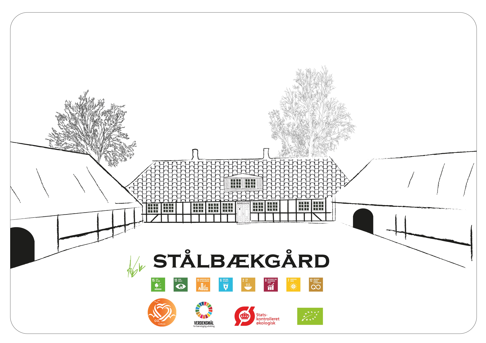
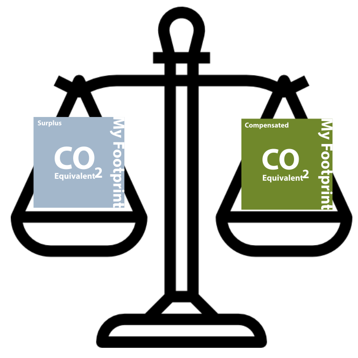
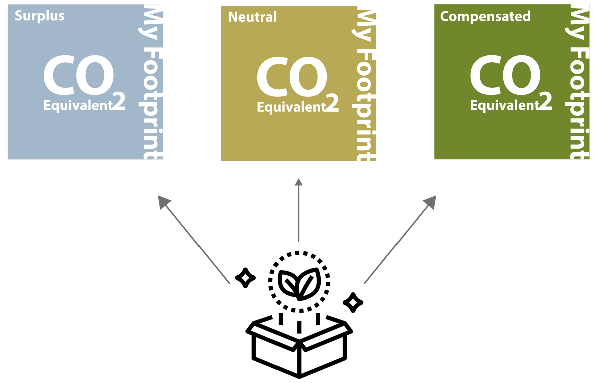
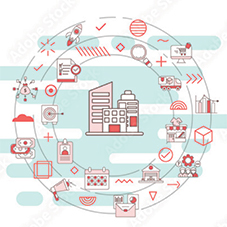
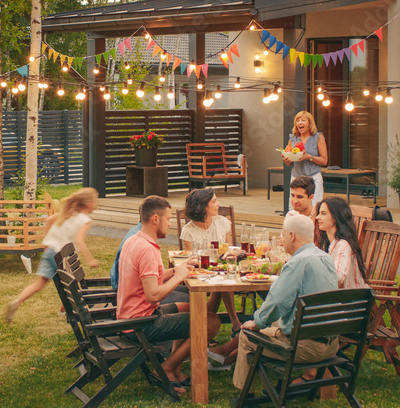
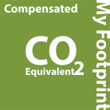
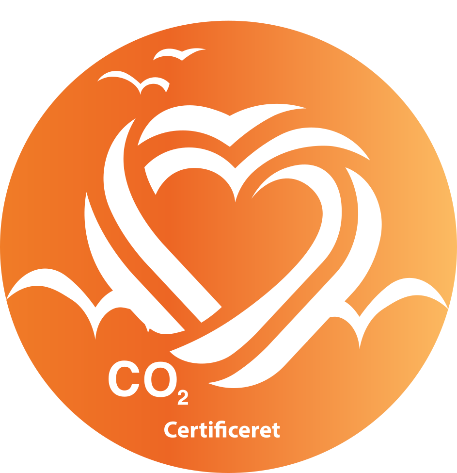

Your Footprint International
Your Footprint International
Make sustainability pay for itself.
A CO2e measurement and trading platform for farmers, businesses and the people buying from them — built on the Green House Gas Protocol.
Your Footprint International
A CO2e measurement and trading platform for farmers, businesses and the people buying from them — built on the Green House Gas Protocol.


Your Footprint Ltd. is an innovative company that strives to make farming more sustainable, while maintaining profitability. We have created a Carbon (CO2e) Farming tool, compliant with the Green House Gas Protocol (GHGP) and exceeding government expectations on CO2 Modeling.
In addition to our farming tool, we have a built-in CO2e marketplace for the trade of carbon credits farmed by the farmer on their own land. Our goal is to make it profitable for agriculture and landowners to plant more forest and begin farming Carbon as a resource. Companies can also use our tool to calculate their Scope 3 CO2e footprint, and then utilise our trading platform to acquire CO2e credits from us and become certified CO2e neutral.
For more information, contact admin@yourfootprint.uk

Before we ask anyone else to use this, we run it ourselves — our tool is built and tested on Stålbæk Gård, our own working farm in Denmark.
Visit Stålbæk GårdLooking for a way to reduce your CO2 footprint, reduce production costs and increase revenue? This section is built for you.
What do farm business owners get using YourFootprint?

An overview of their farm's CO2e status.
CO2e reduction through our CO2e credit trading platform.

Sustainability accounting for the future. **This section requires a monthly subscription
After taking the YF Questionnaire, you can start using the benefits of the tool.


Tired of not knowing where to look? Skeptical about how and why something is or isn't CO2e neutral or compensated? Backed up by in-depth academic research, this puts accountability in your hands.
What does the public get using YourFootprint?
Solid information about CO2e-neutral products bought from companies using YourFootprint, plus fully transparent academic reporting on who, how and where the CO2e credits are collected and calculated.
**This section is FREE to use for the Consumer/End User.
Are you a business leader looking for new and innovative ways to deal with your CO2? Are you interested in your climate impact as a small business, and would you like to pass on the benefit of carbon reduction to your customers? Then this section is for you.
What do business owners get using YourFootprint?

Sustainability branding.

CO2e certification.
CO2e reduction via CO2e credit trading and compensating.
After completing the questionnaire, you'll be redirected to the results page, with an overview of your results plus a step-by-step guide on how to compensate CO2e emissions and how to use the trading platform.
Are you a serious industrial farmer, or do you own a substantial area of forestry? Then this section is for you. Using our system, you can explore new opportunities and increase the value of large areas of your land.
What does a forest owner / industrial farmer get using YourFootprint?
Sign up to our system.
Answer the questionnaire.
Get your overview, CO2e credits, and trade them in our system.
Complete the questionnaire.
Get a step-by-step guide on using the trading system.
Start earning money.
Sustainability accounting in line with international GHG regulations.
**YourFootprint gets a % each time you earn money from your forest or land via YourFootprint. The amount depends on the size of your forest or land saved in our system:
Are you a small or medium-sized business, and a first mover in your sector? We can provide you with a fully certified Scope 3 life cycle analysis for your business. Are you a national company under pressure from regulation and the financial sector to declare your CO2e activities, including upstream and downstream (Scope 3)? Our solution provides peace of mind, moving forward.
What do company owners get using YourFootprint?
Sustainability branding.
CO2e certification.
CO2e reduction via credit trading.
A tool to market their CO2e-neutral status.
Sustainability accounting for the future.
For more information, contact admin@yourfootprint.uk